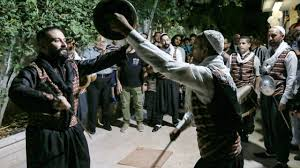

Explore the history, culture, and beauty of Syria
Syria, officially known as the Syrian Arab Republic, is a country in Western Asia. It is known for its rich history, diverse culture, and stunning landscapes. Despite recent challenges, Syria remains a land with deep historical roots and cultural significance.
Syria has a complex and ancient history, with evidence of civilization dating back to the early Bronze Age. It has been home to various empires and civilizations, including the Egyptians, Assyrians, Persians, Greeks, Romans, and Ottomans. Syria gained independence in 1946 and has played an important role in the region ever since.
The culture of Syria is rich and diverse, influenced by the many civilizations that have called it home. Syrian culture includes traditional music, dance, literature, and culinary delights. The country is known for its beautiful handicrafts, intricate mosaics, and historic architecture. Arabic is the official language, and Islam is the predominant religion, with notable Christian and other religious communities as well.
Syria is located in the heart of the Middle East, bordered by Turkey to the north, Iraq to the east, Jordan to the south, and Lebanon and Palestine to the southwest. The country features a variety of landscapes, from the coastal plains along the Mediterranean Sea to the deserts and mountains in the interior. The Euphrates River, one of the most important rivers in the region, flows through Syria.
To learn more about Syria, visit the following resources: